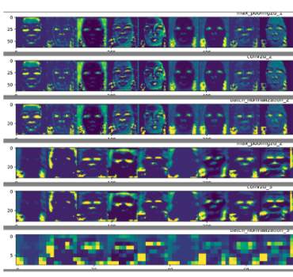

CNN for DeepFake detection
As DeepFakes become more and more prevelant it is critcal we develop and understand tools to help us determine reality from fiction. This project utilizes a pre-trained CNN called Meso-4 to create vizulizations to identify and detect important factors that contribute to an image being "real" or "fake". Technologies used include Python libraries Keras/TensorFlow/matplotlib/PIL.